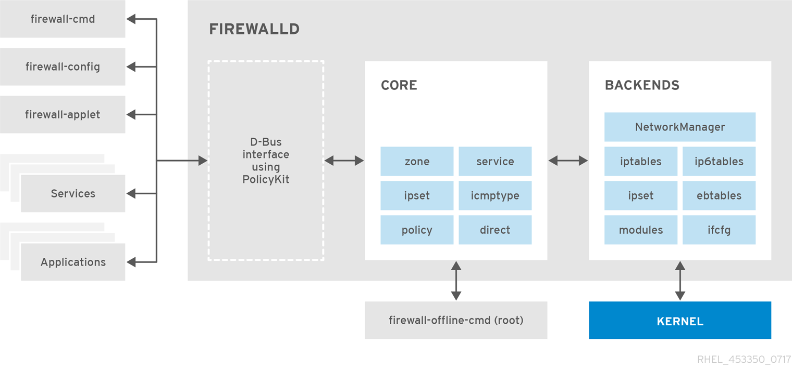

Firewall Basic¶
sudo firewall-cmd --state
sudo firewall-cmd --get-active-zones
public
interfaces: eth0 eth1
sudo firewall-cmd --get-zone-of-interface=eth0
public
sudo firewall-cmd --zone=public --list-interfaces
eth0 eth1
sudo firewall-cmd --zone=public --list-all
public (active)
target: default
icmp-block-inversion: no
interfaces: eth0 eth1
sources:
services: dhcpv6-client ssh
ports:
protocols:
masquerade: no
forward-ports:
sourceports:
icmp-blocks:
rich rules:
sudo firewall-cmd --info-zone=public
get services¶
แสดงรายการ service ที่โหลดอยู่ในระบบ โดยไปอ่านค่าของ configuration ที่อยู่ใน /usr/lib/firewalld/services/
โดยมีชื่อ service-name.xml
ls /usr/lib/firewalld/services/
sudo firewall-cmd --get-services
sudo firewall-cmd --info-service=ftp
ftp
ports: 21/tcp
protocols:
source-ports:
modules: nf_conntrack_ftp
destination:
add services¶
การเพิ่ม service ให้แก่โซน สามารถ ใช้ --add-service แต่หากไม่ระบุ โซนจะเท่ากับเป็นการ add ไปยัง default zone
$ sudo firewall-cmd --permanent --zone=trusted --add-service=mysql
success
$ sudo firewall-cmd --reload
success
$ sudo firewall-cmd --zone=trusted --list-all
trusted
target: ACCEPT
icmp-block-inversion: no
interfaces:
sources:
services: mysql
ports:
protocols:
masquerade: no
forward-ports:
sourceports:
icmp-blocks:
rich rules:
สามรถใช้คำสั่ง --add-port ระบุ port/protocal ที่ต้องการ สามารถที่จะระบุแบบ port เดียวหรือสามารถระบุเป็นช่วง
$ sudo firewall-cmd --permanent --zone=trusted --add-port=8080/tcp
$ sudo firewall-cmd --permanent --zone=trusted --add-port=5060-5061/udp
$ sudo firewall-cmd --zone=trusted --list-ports
$ sudo firewall-cmd --zone=trusted --list-services